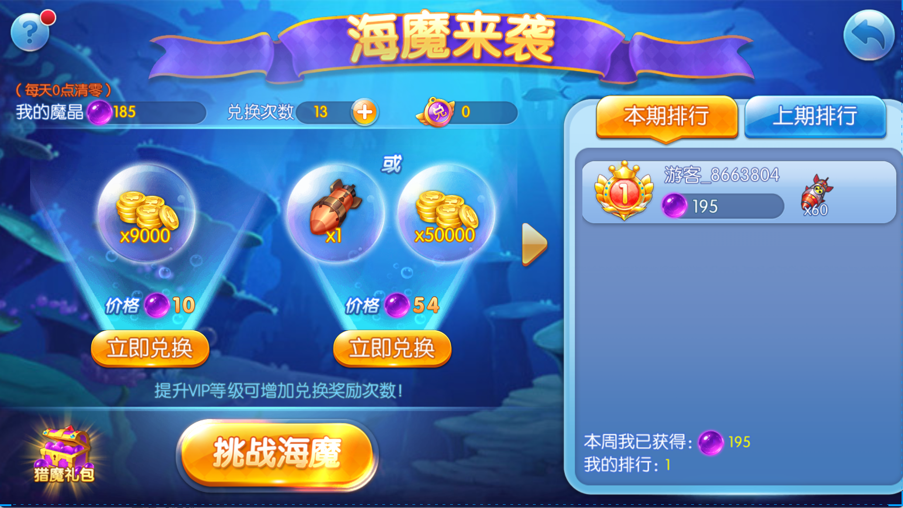
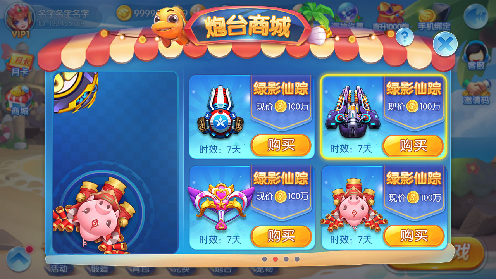
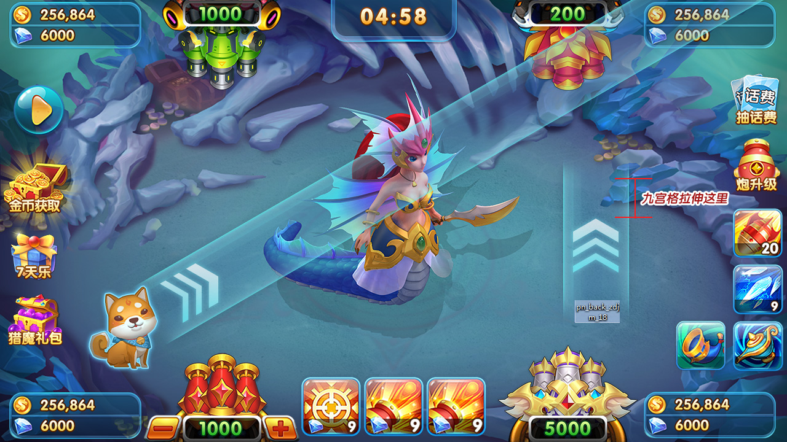

捕鱼游戏源码
完整项目结构、大厅、模式与服务端。
基于仓库真实代码和产品截图，展示捕鱼大厅、经典场、比赛场、Boss、炮台射击以及 C++、FastAPI、Node 和 MySQL 技术结构。

每个页面都有产品功能、玩法流程、技术模块和真实截图，不建立只有关键词的空页面。






仓库包含 Lua 客户端、C++ 捕鱼引擎和房间、FastAPI 房间接口、Node.js 运营 API、MySQL 结构、配置样例和自动测试。生产概率、素材权利和商业能力仍需独立审计。